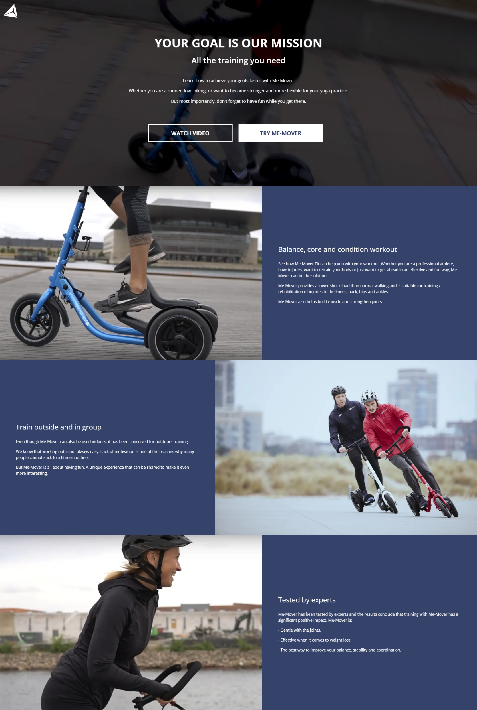
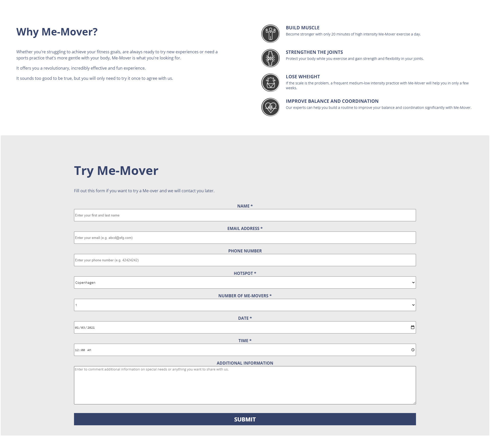
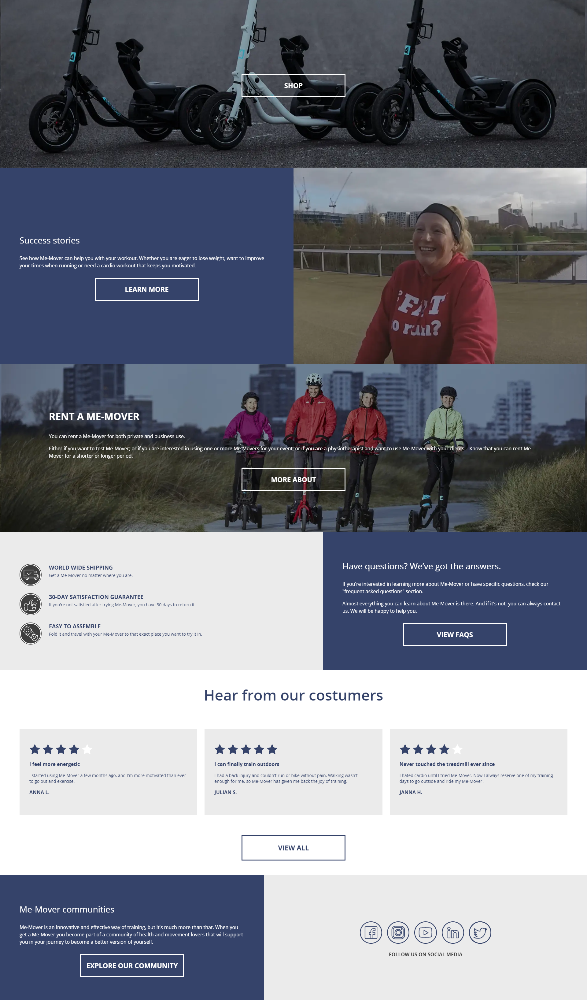

What was it about
This time we had to make a digital campaign which significant part was a landing page. The goal was to increase the interest of potential customers of Me-mover. During the research we found out what they have in common and how we can start a conversation with them. We wanted to empathize with the users that’s why we defined a common goal strive to achieve.
More about the website
The campaign website had to look trustworthy and focus on the customers. To build trust in them, we placed there customer reviews, which add social proof and testimonials to give inspiration and create sense of community. In this project I also learnt how to create and style forms in HTML.
 